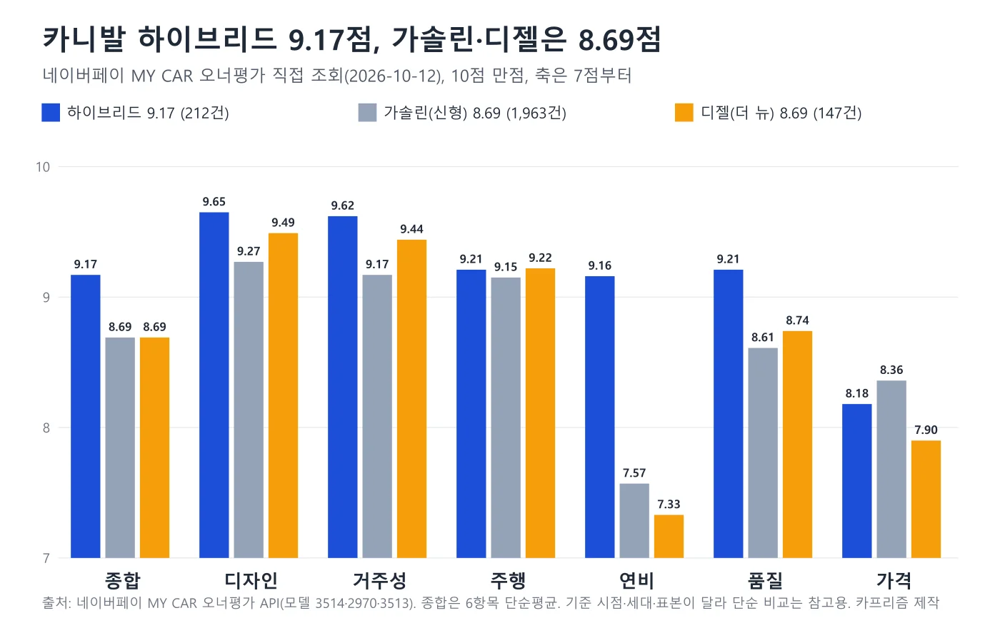
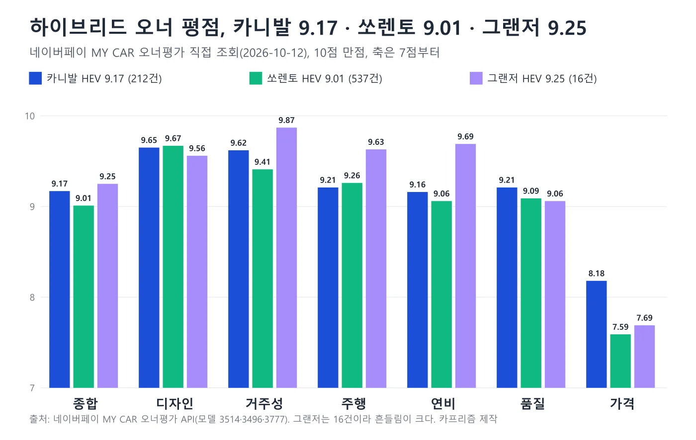
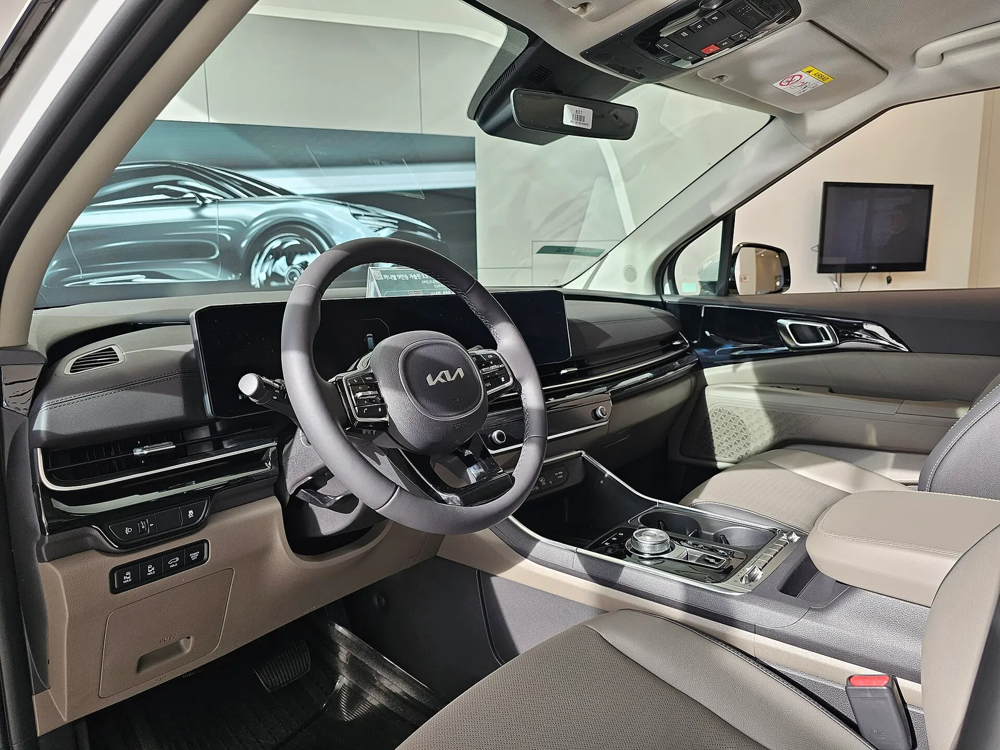
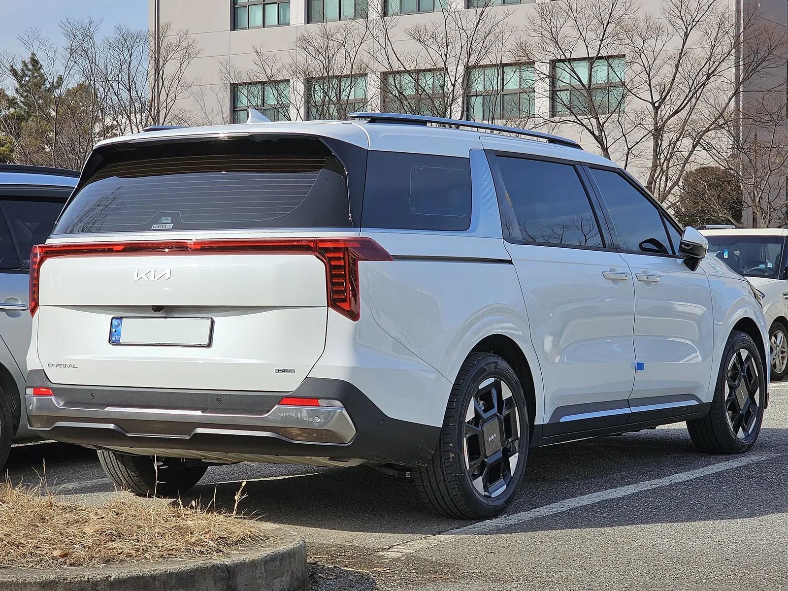
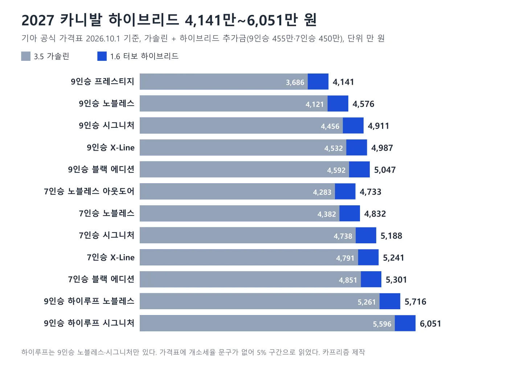
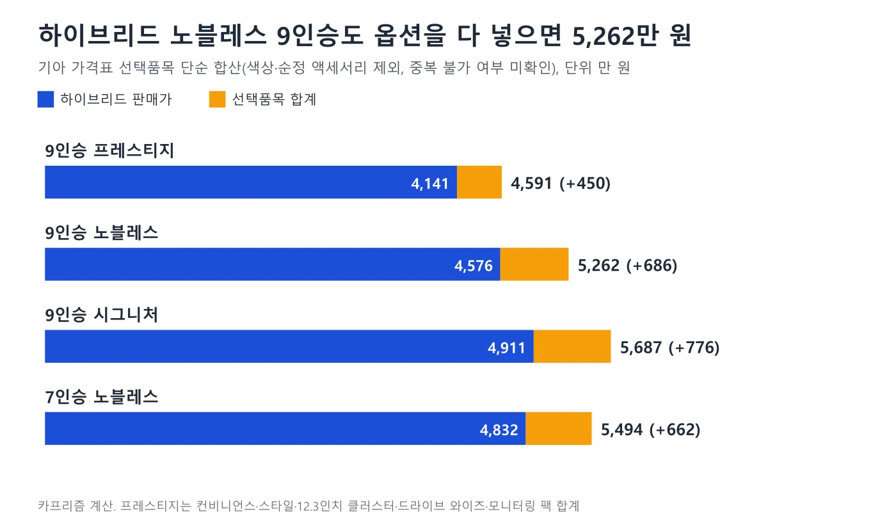
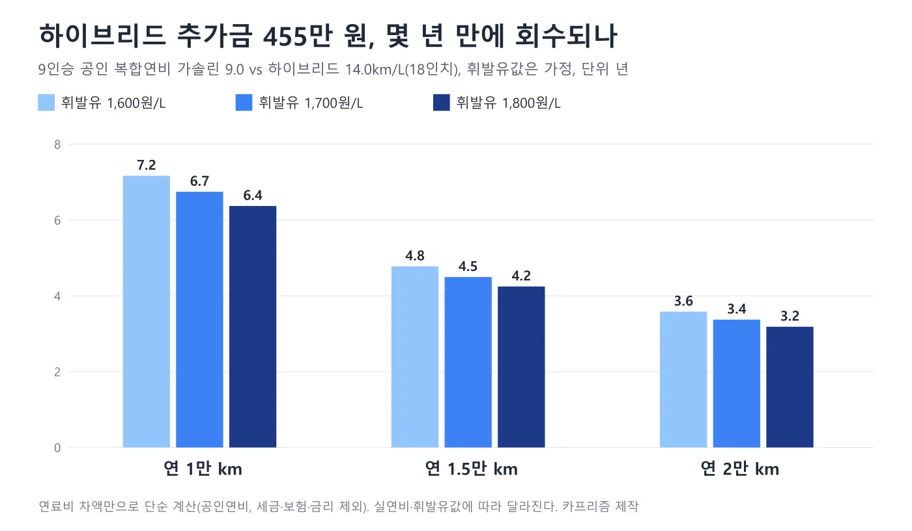

▲ 더 뉴 카니발 하이브리드(스노 화이트 펄, 파일 설명 기준). 번호판은 원본에서 가려져 있다 ⓒ Damian B Oh, Wikimedia Commons (CC BY-SA 4.0)
카니발 하이브리드 오너 평점은 10점 만점에 9.17점(212건), 가격 항목만 8.18점이다. 이 숫자는 2026년 10월 12일 네이버페이 MY CAR의 오너평가 모델별 평균(모델 페이지가 쓰는 공개 JSON, 갱신 2026-09-30)을 직접 조회해 얻었다. 같은 카니발이라도 가솔린(신형 카니발)은 8.69점(1,963건), 디젤(더 뉴카니발)은 8.69점(147건)으로, 격차의 대부분은 연비 항목(하이브리드 9.16점 대 7.57점·7.33점)에서 나온다. 언론은 이 점수를 2024년 10월 9.3점(89명), 2026년 8~9월 9.15점으로 전했는데, 이제 1차 출처 값이 있으므로 현재 점수는 API 값을 기준으로 삼고 과거 보도는 변화를 읽는 참고로만 쓴다. 이 글은 카니발 하이브리드 한 차종만 놓고 ①오너 평점과 항목별 점수 ②기아 공식 제원·연비 ③2027년형 인승·트림별 하이브리드 가격 ④오너 한줄평 ⑤살 때 따질 점을 정리한다. 가격은 기아 공식 가격표(2026년 10월 1일 기준, The 2027 카니발)에서 직접 확인했고, 가격표에 개별소비세율 문구가 없어 개소세 5% 구간으로 읽은 기존 기사와 같은 기준이다. 점수는 자발적으로 참여한 차주의 응답이라 만족한 쪽으로 쏠렸을 수 있다.
시승기·해외 리뷰 12편과 오너 실연비는 카니발 시승기 종합, 출시가 대비 가격 인상은 3년 가격 인상 비교, 스타리아와의 제원 비교는 카니발 vs 스타리아 하이브리드에서 다뤘다. 이 글은 시승기를 다시 요약하지 않고, 오너 평점이 어떻게 움직였는지와 그 점수가 인승·트림별 가격표와 어떻게 맞물리는지에 집중한다.
1. 평점은 어디서 왔나 — 네이버페이 MY CAR 모델별 평균을 직접 조회했다
네이버페이 MY CAR(mycar.naver.com)의 오너평가는 차량 소유 인증을 거친 응답을 모델별로 평균 낸다(2024년 오토트리뷴 보도는 본인 명의 차량번호 인증, 타인 명의·리스·렌트는 보험통합조회로 등록해야 한다고 소개했다). 모델 페이지가 불러오는 공개 JSON(/api/ownerReview/rating/model-no?modelNo=…)을 2026년 10월 12일 직접 조회했고, 카니발은 하이브리드가 모델 번호 3514, 가솔린이 2970, 디젤이 3513이다. 응답에는 모델명·연료·평가 건수·항목별 평균·종합 평균·갱신 시각이 들어 있다. 네이버는 하이브리드를 "더 뉴카니발 하이브리드(KA4)"로 부르는데, 모델 번호가 세대(KA4 부분변경) 단위라서 2027년형만 따로 떼어낸 점수는 아니다.
| 모델(모델 번호) | 건수 | 종합 | 디자인 | 거주성 | 주행 | 연비 | 품질 | 가격 | 갱신 |
|---|---|---|---|---|---|---|---|---|---|
| 더 뉴카니발 하이브리드(3514) | 212 | 9.17 | 9.65 | 9.62 | 9.21 | 9.16 | 9.21 | 8.18 | 2026-09-30 |
| 신형 카니발 가솔린(2970) | 1,963 | 8.69 | 9.27 | 9.17 | 9.15 | 7.57 | 8.61 | 8.36 | 2026-09-28 |
| 더 뉴카니발 디젤(3513) | 147 | 8.69 | 9.49 | 9.44 | 9.22 | 7.33 | 8.74 | 7.90 | 2026-10-05 |
종합 점수는 6개 항목(가격·주행·거주성·디자인·연비·품질)의 단순평균과 맞는다. 하이브리드는 (8.18+9.21+9.62+9.65+9.16+9.21)÷6=9.171이다. 가솔린과 디젤의 종합이 8.69로 같은 것은 우연이다(각각 8.688, 8.687). 같은 모델 번호 안에서도 연식·트림·인승 구분은 API에 없다. 건수는 가솔린이 하이브리드의 9배가 넘어 가솔린은 4세대 출시 이후 누적일 가능성이 있지만, 집계 기간은 확인하지 못했다.
| 보도(매체·날짜) | 출처 표기 | 표본 | 종합 | 디자인 | 거주성 | 주행 | 연비 | 품질 | 가격 |
|---|---|---|---|---|---|---|---|---|---|
| 오토트리뷴 2024.10.12 | 네이버 오너 평가(실소유자만 참여) | 89명 | 9.3 | 9.7 | 9.6 | 9.5 | 9.3 | 9.2 | 8.3 |
| 뉴스와 2025.12.27 | 네이버 마이카 오너평가 | 미표기 | 9.2 | 9.6 | 9.6 | 9.3 | 9.2 | 9.3 | 8.1 |
| 오토트리뷴 2026.8.28 | 네이버 차주 인증 기반 오너 평가 데이터 | 미표기 | 9.15 | 9.6 | 9.6 | 9.2 | 9.1 | 미표기 | 8.1 |
| 오토트리뷴 2026.9.9 | "실제 오너들의 평가 데이터 분석"(플랫폼 미표기) | 200명 이상 | 9.15 | 9.6 | 9.6 | 미표기 | 9.1 | 미표기 | 미표기 |
2024년 10월 값은 오토트리뷴이 전한 "89명" 시점의 점수라서 현재 API의 212건과 표본이 같지 않다. 같은 달 오토버프(10월 20일)도 종합 9.3점을 보도했지만 연비를 9.4점으로 적어 오토트리뷴의 9.3점과 0.1점 어긋난다. 2026년 8월 28일 보도의 9.15점과 9월 9일 보도의 "200명 이상"은 API의 현재 값(9.17점, 212건)과 같은 데이터의 다른 시점으로 보이지만, 보도에 모델 번호가 없어 확정할 수는 없다. 2025년 12월 뉴스와 보도의 9.2점도 같은 경우다. 오너 평가는 응답이 쌓이는 대로 바뀌므로 보도 값은 그 시점의 스냅샷일 뿐이다.
📍 겟차 오너리뷰는 따로 읽어야 한다 (2026.10.5 기준 페이지)
겟차의 카니발 하이브리드 오너리뷰는 11건, 종합 4.7/5점(성능 4.5, 디자인 4.9, 옵션 4.6, 유지관리 4.6)이다. 5점 만점이고 항목 구성도 네이버와 달라 위 점수와 섞지 않았다. 페이지는 "겟차 AI 리포터"가 정리한 것으로 표시돼 있고 연식은 적혀 있지 않다. 11건이라는 표본은 작아서 방향을 참고하는 정도로만 쓴다.
2026년 9월 22일 뉴스와는 카니발 오너 종합 8.67점, 디자인 9.5점, 거주성 9.4점, 주행 9.2점, 차량 가격 7.9점, 체감연비 7.3점을 전했다. 이 값은 하이브리드가 아니라 위 표의 더 뉴카니발 디젤(3513) 점수(8.69·9.49·9.44·9.22·7.90·7.33)와 거의 소수점까지 맞는다. 종합 8.67과 8.69의 0.02점 차이는 집계 시점 차이로 보이지만, 보도에 모델 번호가 없어 같은 데이터라고 단정하지는 않는다. 어느 쪽이든 이 보도의 연비 7.3점은 하이브리드의 점수가 아니므로 하이브리드 연비(9.16점)와 직접 비교하면 안 된다.
2. 하이브리드 9.17점 vs 가솔린·디젤 8.69점 — 어느 항목이 다른가
같은 카니발 안에서 점수를 파워트레인별로 겹치면 차이는 연비 한 항목에 가장 크게 몰린다. 하이브리드의 연비는 9.16점으로 가솔린(7.57점)보다 1.59점, 디젤(7.33점)보다 1.83점 높다. 품질(9.21 대 8.61·8.74)과 거주성(9.62 대 9.17·9.44), 디자인(9.65 대 9.27·9.49)도 하이브리드가 앞서고, 주행(9.21 대 9.15·9.22)은 세 모델이 거의 같다. 가격은 가솔린(8.36점)이 하이브리드(8.18점)보다 0.18점 높고 디젤(7.90점)이 가장 낮다. 하이브리드 추가금 455만 원이 가격 점수를 눌렀을 수 있지만 원자료로 확인한 것은 아니다.

▲ 카니발 파워트레인별 오너 평점(네이버페이 MY CAR 2026-10-12 조회, 세로축은 7점부터). 카프리즘 제작 도표
다른 차종의 하이브리드와 놓고 봐도 가격이 가장 낮은 항목이라는 구도는 같다. 아래 도표처럼 쏘렌토 하이브리드(9.01점, 537건)와 그랜저 하이브리드(9.25점, 16건)도 가격 항목이 7점대 후반으로 가장 낮고 나머지는 9점 안팎이다. 카니발은 가격 8.18점으로 세 차종 중 가장 높다. 그랜저는 16건이라 표본이 작아 흔들림이 크고, 쏘렌토 하이브리드 점수에도 연식 구분이 없다. 쏘렌토·그랜저 하이브리드의 평점과 가격은 쏘렌토 하이브리드 오너 평점 기사, 그랜저 하이브리드 오너 평점 기사에서 따로 다뤘다.

▲ 하이브리드 3종 오너 평점 비교(네이버페이 MY CAR 2026-10-12 조회, 세로축은 7점부터). 그랜저는 16건. 카프리즘 제작 도표
| 항목 | 2024.10 보도(89명) | 2026-10-12 API(212건) | 변화 | 읽는 법 |
|---|---|---|---|---|
| 종합 | 9.3 | 9.17 | −0.13 | 여전히 9점대 |
| 주행 | 9.5 | 9.21 | −0.29 | 가장 큰 하락. 2026.9.9 보도에 "출발 시 토크가 딸린다"는 후기가 인용됨 |
| 연비 | 9.3 | 9.16 | −0.14 | 공식 복합연비는 13.0~14.0km/L(5장 표) |
| 가격 | 8.3 | 8.18 | −0.12 | 가장 낮은 항목은 그대로 |
| 디자인 | 9.7 | 9.65 | −0.05 | 사실상 유지 |
| 거주성 | 9.6 | 9.62 | +0.02 | 변화 없음 |
| 품질 | 9.2 | 9.21 | +0.01 | 변화 없음 |
2024년 보도 값은 소수점 첫째 자리까지만 실렸고 표본도 다르므로, 위 변화량은 대략의 방향으로만 읽어야 한다. 하락 폭이 가장 큰 항목은 주행(−0.29)이다. 그 이유는 보도에도 API에도 없다. 가능한 가설은 둘이다. 첫째, 표본 구성이다. 2024년 10월은 출시 10개월 뒤 89명이었고 지금은 212건이라, 출고를 오래 기다려 받은 초기 오너의 기대감이 높았다가 표본이 늘며 평균으로 내려왔을 수 있다. 둘째, 가격이다. 이후 연식 변경을 거치며 입문 가격이 올랐다(3년 인상 비교 참고). 두 가설 모두 원자료 없이는 검증할 수 없고, 0.1~0.3점이 표본 크기를 감안했을 때 의미 있는 차이인지도 알 수 없다. 이 글은 "눈에 띄게 변했다"가 아니라 "9점대를 유지하되 주행·연비·가격이 조금 깎였다" 정도로만 읽는다.
3. 7인승과 9인승 — 2024년 보도에선 9인승이 0.3점 높았다
2024년 10월 오토트리뷴 보도는 종합 9.3점 안에서 7인승 9.1점, 9인승 9.4점을 따로 전했다. 현재 API에는 인승 구분이 없어 이 수치를 지금 값으로 갱신하지 못했고, 인승별 응답 수와 항목별 점수도 보도에 없다. 2027년형 가격표로 노블레스끼리 비교하면 7인승 하이브리드는 4,832만 원, 9인승은 4,576만 원으로 256만 원 차이다. 7인승 노블레스 이상은 2열에 프리미엄 릴렉션 시트가 들어가고(아웃도어는 미적용, 가격표 기준), 9인승은 기존 시승기 종합 기사 기준으로 들어가지 않는다. 그런데도 오너 평점은 9인승이 높았다. 다만 7인승 응답자가 소수일 가능성이 크고 이유는 보도에 없어 설명할 수 없다.

▲ 더 뉴 카니발 실내(전면부, 전시장에서 촬영한 것으로 보임). 트림과 파워트레인은 확정하지 않는다 ⓒ Damian B Oh, Wikimedia Commons (CC BY 4.0)
인승 선택은 평점보다 쓰임새가 더 크게 가른다. 2026년 10월 1일 기아 가격표에는 9인승, 7인승, 9인승 하이루프 세 탭만 있고 11인승은 없다. 3세대 11인승은 9인승 vs 11인승 기사에서 중고 기준으로 다뤘다. 고속도로 버스전용차로는 9인승 이상 승용차가 6명 이상 탔을 때만 쓸 수 있고 7인승은 몇 명이 타도 이용할 수 없다는 기준이 그 기사와 시승기 종합 기사에 도로교통법 시행령 기준으로 정리돼 있다. 이 글에서 법령 원문을 다시 열지는 않았다.
4. 오너 한줄평 — 확인된 인용만
아래는 언론이 인용한 네이버 오너 평가와 겟차 오너리뷰의 후기다. 오토트리뷴 2024년 10월 보도는 작성자 아이디 앞 네 글자와 항목을 함께 실었고, 2026년 8월 28일·9월 9일 보도는 게시처 없이 "차주들"의 말로만 인용했다. 이 2026년 두 보도는 후기 원문을 대조할 수 없어 2024년 보도보다 신뢰도를 낮게 본다. 네이버 후기 원문은 앱에서만 열려 직접 확인하지 못했고, 겟차 인용은 해당 페이지(2026.10.5 수정)에서 문구를 대조했다.
| 구분 | 후기 | 출처 |
|---|---|---|
| 거주성 | "차가 커서 거주 공간이 좋다" / "부모님 모시기에도 좋다" | 네이버 오너 평가(orio****, jaeg****), 오토트리뷴 2024.10.12 인용 |
| 주행 | "하이브리드라 해서 힘 부족하고 그런 거 없다" | 네이버 오너 평가(jsfa****), 오토트리뷴 2024.10.12 인용 |
| 주행(부정) | "출발 시 토크가 딸리고 오르막이나 고속 추월 시 힘이 답답하다" | 오토트리뷴 2026.9.9 인용(게시처 미표기) |
| 연비 | "거대한 차체 대비 작은 엔진과 모터로 셀토스보다 좋은 연비를 보여준다" | 네이버 오너 평가(eien****), 오토트리뷴 2024.10.12 인용 |
| 연비 | "이전 차량이었던 스포티지 가솔린보다 연비가 훨씬 잘 나온다" | 오토트리뷴 2026.9.9 인용(게시처 미표기) |
| 가격(최다 추천) | "총 구매비용 6,100만 원 가까이 들었다", "가격이 안드로메다로 가고 있다" | 네이버 오너 평가(jss1****), 오토트리뷴 2024.10.12 인용(2년 전 후기) |
| 가격 | "차 자체는 너무 좋은데 풀옵션을 넣으면 5천만 원을 훌쩍 넘어 가격 부담이 크다" | 오토트리뷴 2026.8.28 인용(게시처 미표기) |
| 유지관리 | "연비는 700킬로미터 정도 주행했는데 평균 16 정도 나왔습니다." | 겟차 오너리뷰(2026.10.5 기준 페이지) |
| 옵션 | "안전에 관련되는 옵션들은 돈 아깝다 생각마시고 왠만하면 선택하시는걸 추천드립니다." | 겟차 오너리뷰(2026.10.5 기준 페이지) |

▲ 더 뉴 카니발 실내(조수석 쪽, 전시장에서 촬영한 것으로 보임). 거주성은 9.62점으로 가솔린(9.17점)보다 높다. 트림은 확정하지 않는다 ⓒ Damian B Oh, Wikimedia Commons (CC BY 4.0)
긍정 후기는 공간과 연비에, 부정 후기는 힘과 가격에 모인다. 이 방향은 점수와 같다. 힘이 부족하다는 불만은 주행 점수 하락(2024년 보도 9.5 → 현재 9.21)과 같은 방향이지만, 한두 건의 인용으로 원인을 단정하지는 않는다. 가격 후기에 반복되는 말은 "옵션을 넣으면 5천만 원 이상"인데, 이 부분은 7장에서 공식 가격표 선택품목으로 따로 계산했다.
5. 공식 제원과 연비 — 인승·휠마다 13.0~14.0km/L
제원은 기아 공식 제원 페이지(2026년 10월 조회)에서 확인했다. 1.6 터보 가솔린 엔진과 전기모터를 합친 시스템이고 구동은 전륜 한 가지다. 3.5 가솔린은 비교용으로 함께 적었다. 공식 제원은 기아 카니발 제원 바로가기에서 볼 수 있다.
| 항목 | 1.6 터보 하이브리드 | 3.5 가솔린 |
|---|---|---|
| 시스템 최고출력 | 245마력(엔진 180PS + 모터 54.0kW) | 294마력 / 6,400rpm |
| 시스템 최대토크 | 37.4kgf·m(엔진 27.0kgf·m + 모터 304Nm) | 36.2kgf·m / 5,000rpm |
| 배기량·변속기 | 1,598cc, 자동 6단 | 3,470cc, 자동 8단 |
| 전장·전폭·축거 | 5,155 / 1,995 / 3,090mm | 5,155 / 1,995 / 3,090mm |
| 전고 | 1,785mm(하이루프 2,045mm) | 1,775mm(하이루프 2,045mm) |
| 공차중량 | 2,155~2,250kg | 2,080~2,165kg |
| CO₂ 배출 | 116~125g/km | 189~196g/km |
| 타이어 | 235/60R18, 235/55R19 | 235/60R18, 235/55R19 |
| 구성 | 복합 | 도심 | 고속도로 | CO₂(g/km) | 공차(kg) |
|---|---|---|---|---|---|
| 9인승 18인치 | 14.0 | 14.6 | 13.3 | 116 | 2,155 |
| 9인승 18인치(빌트인 캠 장착) | 13.7 | 14.0 | 13.4 | 118 | 2,155 |
| 9인승 19인치 | 13.5 | 14.0 | 12.9 | 121 | 2,165 |
| 7인승 19인치 | 13.5 | 14.0 | 12.9 | 121 | 2,175 |
| 9인승 하이루프(18·19인치) | 13.0 | 13.8 | 12.1 | 125 | 2,240~2,250 |
같은 하이브리드라도 휠 크기, 빌트인 캠 장착 여부, 하이루프에 따라 복합연비가 13.0km/L에서 14.0km/L까지 1.0km/L 벌어진다. 오너 평점의 연비 항목(9.16점)을 "공식 연비 14.0km/L에 대한 점수"로 읽으면 안 된다는 뜻이다. 3.5 가솔린은 같은 제원 페이지에서 복합 8.7~9.0km/L이고, 네이버 오너평가에서도 가솔린 연비는 7.57점으로 하이브리드(9.16점)보다 1.59점 낮다. 오너가 하이브리드 연비에 후한 점수를 준 데는 가솔린·디젤과의 상대 비교가 작용했을 가능성이 있지만, 이유를 묻는 항목이 아니므로 추정으로만 적는다. 오너 실연비 평균(마이클 앱 14,331명 평균 13.79km/L)은 시승기 종합에 있다.

▲ 더 뉴 카니발 하이브리드 후면(스노 화이트 펄, 파일 설명 기준). 공식 제원상 전고는 하이브리드 1,785mm로 가솔린보다 10mm 높다. 번호판은 원본에서 가려져 있다 ⓒ Damian B Oh, Wikimedia Commons (CC BY-SA 4.0)
6. 2027년형 트림별 가격 — 하이브리드는 4,141만~6,051만 원
기아 가격표(2026년 10월 1일 기준)에서 하이브리드는 별도 트림이 아니라 3.5 가솔린에 더하는 선택 품목이다. 추가금은 9인승·하이루프 455만 원, 7인승 450만 원이다. 표의 하이브리드 값은 가솔린 판매가에 이 추가금을 더한 것이고, 시승기 종합 기사의 가격표와 같은 값이다. 공식 가격표는 기아 카니발 가격표 바로가기에서 볼 수 있다.
| 인승 | 트림 | 3.5 가솔린 | 1.6 터보 하이브리드 |
|---|---|---|---|
| 9인승 | 프레스티지 | 3,686 | 4,141 |
| 노블레스 | 4,121 | 4,576 | |
| 시그니처 | 4,456 | 4,911 | |
| X-Line | 4,532 | 4,987 | |
| 블랙 에디션 | 4,592 | 5,047 | |
| 7인승 | 노블레스 아웃도어 | 4,283 | 4,733 |
| 노블레스 | 4,382 | 4,832 | |
| 시그니처 | 4,738 | 5,188 | |
| X-Line | 4,791 | 5,241 | |
| 블랙 에디션 | 4,851 | 5,301 | |
| 9인승 하이루프 | 노블레스 | 5,261 | 5,716 |
| 시그니처 | 5,596 | 6,051 |

▲ 인승·트림별 판매가(2026.10.1, 단위 만 원). 파란 부분이 하이브리드 추가금이다. 카프리즘 제작 도표
📍 가격표 세금 기준은 확인하지 못했다
기아 가격표 본문에는 개별소비세율과 하이브리드 세제혜택 반영 여부를 적은 문구가 없다. 이 글은 기존 기사와 같이 개소세 5% 구간의 값으로 읽었다. 하이브리드 개소세 감면(대당 70만 원 한도)은 정부 세제개편안에서 2026년 12월 31일 종료로 제시돼 가격표가 약 100만 원 오를 수 있다는 분석이 있지만, 국회 확정 여부는 확인하지 못했다. 자세한 대입은 2027년 하이브리드 세제 대입 기사에 있다.
가격 항목이 8점대에 머무는 배경은 이 표에서 짐작된다. 가장 싼 하이브리드가 4,141만 원이고, 많이 고르는 노블레스는 9인승 4,576만 원, 7인승 4,832만 원이다. 하이루프는 5,716만~6,051만 원으로 6천만 원 선에 걸친다. 4인승 하이리무진의 가격과 대기는 하이리무진 기사에 따로 있다.
7. "풀옵션 5천만 원 넘는다" — 선택품목을 합치면
오너 후기에 반복되는 "풀옵션이면 5천만 원 이상"을 가격표 숫자로 확인해 봤다. 아래는 기아 가격표 각 트림의 선택품목(스타일, 컴포트, 스마트 커넥트, 드라이브 와이즈, 모니터링 팩, HUD+빌트인 캠 2, BOSE 사운드, 듀얼 선루프 등)을 하이브리드 판매가에 단순 합산한 값이다. 색상(스노우 화이트 펄 8만 원)과 기아 순정 액세서리(후석 스마트 엔터테인먼트 시스템 273만~282만 원, 마이컴포트 패키지)는 뺐다. 선택품목 사이의 중복 불가·선행 조건은 전부 확인하지 못했다. 실제 주문 가능한 최대치가 아니라 가격표 숫자의 단순 합이라는 뜻이다.
| 구성 | 하이브리드 판매가 | 선택품목 합계 | 합산 가격 | 포함 품목 |
|---|---|---|---|---|
| 9인승 프레스티지 | 4,141 | 450 | 4,591 | 컨비니언스 110, 스타일 70, 12.3인치 클러스터 60, 드라이브 와이즈 120, 모니터링 팩 90 |
| 9인승 노블레스 | 4,576 | 686 | 5,262 | 스타일 70, 컴포트 146, 스마트 커넥트 75, 드라이브 와이즈 75, 모니터링 팩 120, HUD+캠 120, 듀얼 선루프 80 |
| 9인승 시그니처 | 4,911 | 776 | 5,687 | 위 품목 + BOSE 사운드 90 |
| 7인승 노블레스 | 4,832 | 662 | 5,494 | 스타일 47, 컴포트 119, 스마트 커넥트 79, 드라이브 와이즈 79, 모니터링 팩 127, HUD+캠 127, 듀얼 선루프 84 |

▲ 하이브리드 판매가와 선택품목 단순 합계(만 원). 중복 불가 여부는 확인하지 못했다. 카프리즘 제작 도표
9인승 노블레스만 해도 선택품목을 전부 넣으면 5,262만 원이어서 후기의 "5천만 원을 훌쩍 넘는다"와 숫자가 맞는다. 겟차 후기가 권한 "안전에 관련되는 옵션"이 어느 품목을 가리키는지는 적혀 있지 않다. 프레스티지는 12.3인치 클러스터를 먼저 넣어야 드라이브 와이즈와 모니터링 팩을 고를 수 있다는 가격표 조건이 확인된다.
8. 하이브리드 추가금 455만 원, 몇 년이면 회수되나
가격 항목에 하이브리드 추가금이 얼마나 반영됐는지는 알 수 없지만, 추가금이 연료비로 회수되는 기간은 계산할 수 있다. 9인승 18인치 공식 복합연비(가솔린 9.0km/L, 하이브리드 14.0km/L)로 연 1.5만km를 타면 휘발유를 약 595L 덜 쓴다. 휘발유값은 실제 시세로 확인하지 않고 L당 1,600~1,800원으로 가정했다.
| 연 주행거리 | 연간 절감 연료량 | 휘발유 1,600원/L | 1,700원/L | 1,800원/L |
|---|---|---|---|---|
| 1만km | 약 397L | 7.2년 | 6.7년 | 6.4년 |
| 1.5만km | 약 595L | 4.8년 | 4.5년 | 4.2년 |
| 2만km | 약 794L | 3.6년 | 3.4년 | 3.2년 |

▲ 추가금 회수 기간(공식 복합연비 기준 단순 계산). 실연비와 휘발유 가격에 따라 달라진다. 카프리즘 제작 도표
연 1만km 아래라면 회수에 6~7년이 걸려 하이브리드가 불리하고, 연 2만km 이상이면 3년 안팎이다. 세금·보험료·감가 차이는 포함하지 않았고 오너 실연비는 공인과 다를 수 있다. 오너 평가에서 연비 점수가 9점대를 유지하는 이유는 보도에 없다.
▲ 더 뉴 카니발 하이브리드 전면(스노 화이트 펄, 파일 설명 기준). 번호판은 원본에서 가려져 있다 ⓒ Damian B Oh, Wikimedia Commons (CC BY-SA 4.0)
9. 살 때 따질 점 — 평점이 말해 주는 것과 못 말하는 것
- 점수는 KA4 부분변경 하이브리드 전체 평균이다: 네이버 모델 번호 3514 한 개에 연식·트림·인승 구분이 없다. 2027년형만의 평점은 확인하지 못했다
- 연비 점수는 하이브리드의 강점이다: 같은 카니발 가솔린 7.57점·디젤 7.33점과 1.6~1.8점 벌어진다. 반대로 가격은 하이브리드(8.18점)가 가솔린(8.36점)보다 낮다
- 인승부터 정한다: 버스전용차로가 필요하면 9인승, 2열 릴렉션 시트가 필요하면 7인승이다. 2024년 보도에서는 9인승(9.4)이 7인승(9.1)보다 높았지만 현재 값은 확인하지 못했다
- 힘을 중시하면 시승한다: 주행 점수가 2024년 보도 9.5에서 9.21로 내려왔고 출발·추월 시 힘이 아쉽다는 후기가 같은 보도에 있다. 하이브리드 시스템 245마력·37.4kgf·m는 가솔린 294마력·36.2kgf·m와 다르다
- 총액은 옵션 포함으로 본다: 가격표 4,141만 원부터지만 노블레스 9인승은 선택품목을 합치면 5,262만 원이다. 필요한 품목부터 고른다
- 연 1.5만km 이상이면 추가금 회수가 4~5년: 1만km 아래라면 가솔린 9인승 프레스티지(3,686만 원)가 낫다는 계산도 나온다
- 연말 가격 변동 가능성: 하이브리드 개소세 감면 종료가 확정되면 약 100만 원이 오를 수 있다는 분석이 있지만 국회 확정은 확인하지 못했다
- 차세대 소식: 5세대 풀체인지는 5세대 기사가 다룬 루머 단계의 내용이고 이 글의 가격·점수와 무관하다
10. 이 글이 확인하지 못한 것
- 연식별 점수: 네이버 API에 연식·트림·인승 구분이 없다. 2027년형 단독 평점과 인승별 응답 수는 없다. 2025년 12월·2026년 8월 보도의 표본 수도 확인하지 못했다
- API의 성격: 네이버 모델 페이지가 쓰는 공개 JSON을 직접 조회했지만 네이버가 공식 문서로 제공하는 API는 아니다. 점수는 조회 시점(2026-10-12, 갱신 2026-09-30)의 값이고 계속 바뀐다. 가솔린은 "신형 카니발"(2970) 모델 번호의 값이어서 더 뉴 카니발 가솔린만의 점수는 별도로 찾지 못했다. 네이버 차량 목록에서 2027 카니발(가솔린)이 가리키는 번호(3513)에는 API가 "디젤"로 표기한다
- 후기 원문: 오너 한줄평은 언론이 인용한 것(2024년 보도는 아이디 앞 네 글자 포함)이고 네이버 원문 후기는 직접 열어 보지 못했다. 2026년 8~9월 보도의 인용은 게시처가 없어 신뢰도를 낮게 본다
- 가격표 세금 기준: 가격표에 개소세율·하이브리드 감면 반영 여부 문구가 없다. 4,141만 원이 감면 적용 후 값인지 확인하지 못했다
- 개소세 감면 종료의 국회 확정: 정부안 단계로만 인용했다
- 선택품목 중복·선행 조건: 7장 합산은 가격표 숫자의 단순 합이다
- 겟차 가격 표기와의 차이: 겟차 페이지는 12개 등급 가격을 4,141만~6,021만 원으로 적었으나 기아 가격표 계산은 6,051만 원이다. 30만 원 차이의 원인은 확인하지 못했고 이 글은 기아 가격표만 사용했다
- 구성별 오너 평점: 휠·하이루프에 따른 연비 차이(13.0~14.0km/L)가 점수에 반영됐는지 알 수 없다
11. 요약
네이버페이 MY CAR 오너평가(2026-10-12 조회)에서 더 뉴카니발 하이브리드(KA4)는 212건 기준 종합 9.17점이다. 디자인 9.65, 거주성 9.62, 주행 9.21, 품질 9.21, 연비 9.16, 가격 8.18점으로 가격이 가장 낮다. 같은 카니발 가솔린(1,963건)과 디젤(147건)은 8.69점이고, 차이는 연비(7.57·7.33점)에서 크게 난다. 2024년 10월 보도 9.3점(89명), 2026년 8월 보도 9.15점은 그 시점의 스냅샷이다.
2027년형 하이브리드 가격은 기아 공식 가격표(2026.10.1)에서 9인승 4,141만~5,047만 원, 7인승 4,733만~5,301만 원, 9인승 하이루프 5,716만·6,051만 원이다. 공식 복합연비는 13.0~14.0km/L, 시스템 출력은 245마력·37.4kgf·m다. 노블레스 9인승은 선택품목을 합치면 5,262만 원이다.
연식별 점수, 후기 원문, 가격표의 세금 반영 여부, 개소세 감면 종료의 국회 확정은 확인하지 못했다. 평점은 자발적 응답의 평균이라 만족한 오너 쪽으로 쏠렸을 수 있다.